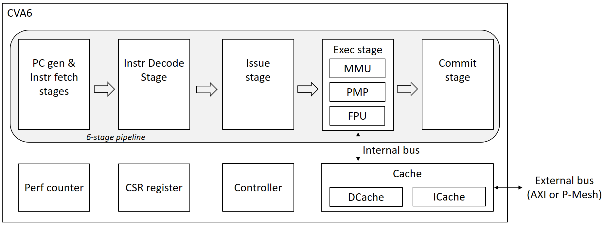

Introduction
License
Copyright 2023 OpenHW Group and Thales
SPDX-License-Identifier: Apache-2.0 WITH SHL-2.1
Licensed under the Solderpad Hardware License v 2.1 (the “License”); you may not use this file except in compliance with the License, or, at your option, the Apache License version 2.0. You may obtain a copy of the License at https://solderpad.org/licenses/SHL-2.1/. Unless required by applicable law or agreed to in writing, any work distributed under the License is distributed on an “AS IS” BASIS, WITHOUT WARRANTIES OR CONDITIONS OF ANY KIND, either express or implied. See the License for the specific language governing permissions and limitations under the License.
Work In Progress
This document is a work in progress and the team currently drafting it focuses on its use to verify several configurations of CVA6.
The current limitation of documentation on CVA6 is well understood. Rather than regretting this, the reader is encouraged to contribute to it to make CVA6 an even better core. To contribute to the project, refer to the Contributing guidelines and get in touch with the team.
Target Audience
The CVA6 user manual targets:
SW programmers
HW designers who integrate CVA6 into a SoC/ASIC/FPGA
Architects who design a coprocessor for the CV-X-IF interface and who need to create SW to use it
HW designers who synthesize/place&route/verify a design that embeds CVA6
Verification engineers involved in the OpenHW Group’s CVA6 project who use this manual as a reference.
The user guide does not target people who dig into CVA6 design. No internal mechanisms are described here, except if the user has some sort of control on it. A separate design document digs into the core microarchitecture.
CVA6 Overview
CVA6 is a RISC-V compatible application processor core that can be configured as a 32- or 64-bit core: CV32A6 and CV64A6.
CVA6 can be configured to the users’ and application needs thanks to several parameters and optional features (MMU, PMP, FPU, cache organization and size…). It targets FPGA and ASIC technologies.
CVA6, as an application core, can run many operating systems. It has already been demonstrated with embedded Linux distributions (built with BuildRoot and Yocto), FreeRTOS and Zephyr.
CVA6 features the CV-X-IF coprocessor interface to extend the set of instructions it can execute.
The goal of CVA6 is to be fully compliant with RISC-V specifications and feature no or extremely few custom extensions (except through extensions on CV-X-IF interface).
CV32A6 and CV64A6 share the same SystemVerilog source code, available in this GitHub repository.
CV64A6 is an industrial evolution of ARIANE created by ETH Zürich and the University of Bologna. CV32A6 is a later addition by Thales. CVA6 is now curated at the OpenHW Group by its members.
Configurations
CVA6 is actually a family of cores, as CVA6 can be configured to the users’ needs with more than 50 parameters. A configuration is defined as a given set of parameters.
A few configurations undergo a complete verification process to bring them to TRL-5, the maturity level where they can be integrated in production ASICs.
This manual includes generic descriptions of CVA6 capabilities, as well as their applicability to the verified configurations.
As of today, two configurations are being verified and addressed in this document:
Configuration |
Short description |
Target |
Privilege levels |
Supported RISC-V ISA |
CV-X-IF |
|---|---|---|---|---|---|
CV32A60AX |
32-bit application core |
ASIC |
Machine, Supervisor, User |
RV32IMACZicsr_Zifencei_Zicount_Zba_Zbb_Zbc_Zbs_Zcb_Zicond |
Included |
CV32A60X |
32-bit embedded core |
ASIC |
Machine only |
RV32IMCZicsr_Zifencei_Zba_Zbb_Zbc_Zbs_Zcb |
Included |
CV64A6_MMU |
64-bit embedded core with MMU |
ASIC |
Machine, Supervisor, User |
RV64IMCZicsr_Zifencei_Zba_Zbb_Zbc_Zbs_Zcb |
Included |
CV32A60X is an interim part number until the team can decide if this configuration is single- or dual-issue. If the dual-issue architecture is selected, the part number will become CV32A65X to denote the extra performance.
In the future, dedicated user manuals for each configuration could be generated. The team is looking for a contributor to implement this through templating.
Scope of the IP
The scope of the IP refers the subsystem that is documented here.

As displayed in the picture above, the IP comprises:
The CVA6 core;
L1 write-through cache;
Optional FPU;
Optional MMU;
Optional PMP;
CSR;
Performance counters;
AXI interface;
Interface with the P-Mesh coherence system of OpenPiton;
CV-X-IF coprocessor interface (not shown).
These are not part of the IP (several solutions can be used):
CLINT or PLIC Interrupt modules;
Debug module (such as DTM);
Support of L1 write-back cache.
Specifications and References
Applicable Specifications
CVA6 strives to comply with the following specifications. When the specifications allow variations (parameters, optional features…), this users’ guide will detail them.
“The RISC-V Instruction Set Manual, Volume I: User-Level ISA, Document Version 20191213”, Editors Andrew Waterman and Krste Asanović, RISC-V Foundation, December 13, 2019.
“The RISC-V Instruction Set Manual, Volume II: Privileged Architecture, Document Version 20211203”, Editors Andrew Waterman, Krste Asanović and John Hauser, RISC-V Foundation, December 4, 2021.
“RISC-V External Debug Support, Document Version 0.13.2”, Editors Tim Newsome and Megan Wachs, RISC-V Foundation, March 22, 2019.
“RISC-V Architectural Compatibility Test Framework”, https://github.com/riscv-non-isa/riscv-arch-test.
AXI Specification, https://developer.arm.com/documentation/ihi0022/hc.
CV-X-IF coprocessor interface currently prepared at OpenHW Group; current version in https://docs.openhwgroup.org/projects/openhw-group-core-v-xif/.
“OpenPiton Microarchitecture Specification”, Princeton University, https://parallel.princeton.edu/openpiton/docs/micro_arch.pdf.
Reference Documents
These are additional reference cited in this guide:
Core-Local Interruptor (CLINT), “SiFive E31 Core Complex Manual v2p0”, chapter 6, https://static.dev.sifive.com/SiFive-E31-Manual-v2p0.pdf